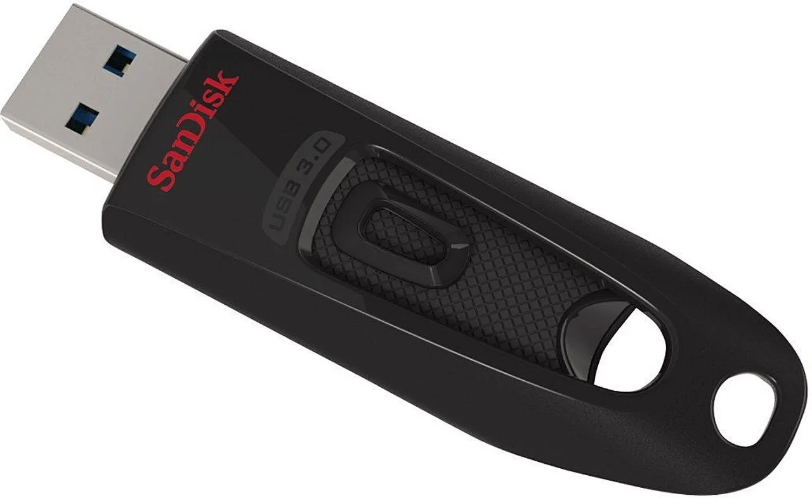

Descubre cómo la tecnología transforma la gestión de la información.
Productos
Memoria USB SanDisk

La memoria USB SanDisk es una opción práctica y confiable para guardar documentos, fotos,
videos y otros archivos importantes de manera segura y accesible.